# Parámetros
n <- 75 # Número total de láminas del álbum
m <- 6 # Número de láminas en cada sobre
repe <- TRUE # Láminas repetidas en cada sobre
# Número de simulaciones
nsim <- 1000
# Resultados simulación
nsobres <- numeric(nsim)
# evol <- vector("list", nsim)
# Fijar semilla
set.seed(1)
# Bucle simulación
for (isim in 1:nsim) {
# seed <- .Random.seed # .Random.seed <- seed
album <- logical(n)
i <- 0 # Número de sobres
while(sum(album) < n) {
i <- i + 1
album[sample(n,m, replace = repe)] <- TRUE
}
nsobres[isim] <- i
}
hist(nsobres, breaks = "FD", freq = FALSE,
main = "", xlab = "Número de sobres")
lines(density(nsobres))Simulación Estadística
Unidad 1: Generando números pseudo aleatorios
1 Simulación Estadística
1.1 ¿Qué es la simulación?
El acto de “simular”:
Según el Diccionario de la Lengua Española de la RAE, “simular” significa representar algo, fingiendo o imitando lo que no es.
De acuerdo con TheFreeDictionary, “simular” es hacer creer una cosa que no es verdad con palabras, gestos o acciones, y también se refiere a representar algo fingiendo lo que no es.
WordReference define “simular” como representar una cosa fingiendo o imitando lo que no es.
de ChatGPT
Estas definiciones resaltan la idea de crear una apariencia o representación de algo que no es real o verdadero, ya sea mediante acciones, palabras o gestos. En un contexto más amplio, la simulación puede usarse en diversos campos, como la ciencia, la tecnología y el arte, para representar o modelar situaciones, procesos o sistemas de manera virtual o teórica.
El término “simular” proviene del latín “simulāre” y tiene varias definiciones que se centran en la idea de representación o imitación
La experimentación directa sobre la realidad puede tener muchos inconvenientes, entre otros:
Coste elevado: por ejemplo cuando las pruebas son destructivas o si es necesario esperar mucho tiempo para observar los resultados.
Puede no ser ética: por ejemplo la experimentación sobre seres humanos o la dispersión de un contaminante.
Puede resultar imposible: por ejemplo cuando se trata de un acontecimiento futuro o una alternativa en el pasado.
1.2 Simulación estadística
Para estadísticos e investigadores, el término ‘simulación’ describe una gran cantidad de técnicas variadas y útiles, todas relacionadas con la imitación de las reglas de un modelo de algún tipo. Estas técnicas permiten a los investigadores y analistas estudiar y predecir el comportamiento del sistema bajo diferentes condiciones y escenarios sin necesidad de experimentos físicos o reales.
En la simulación estadística, se emplean modelos probabilísticos para representar la incertidumbre y la variabilidad inherente a los fenómenos reales. Estos modelos pueden ser tan simples como distribuciones de probabilidad básicas o tan complejos como sistemas dinámicos y redes neuronales. Al ejecutar la simulación múltiples veces, se obtienen distribuciones de resultados que ayudan a comprender mejor el sistema y a evaluar riesgos, eficiencia, y otras métricas importantes.
El objetivo es a menudo explorar “qué pasaría si” en situaciones donde los experimentos reales son impracticables, costosos, peligrosos o éticamente inviables.
Por ejemplo:
En ingeniería, los estudios de simulación pueden usarse para predecir cómo se comportará una estructura bajo ciertas cargas sin tener que construirla físicamente.
En finanzas, pueden ayudar a evaluar los riesgos de diferentes inversiones o estrategias de mercado.
En medicina, se pueden utilizar para prever la progresión de enfermedades o la respuesta a distintos tratamientos.
Los estudios de simulación dependen de la generación de datos y escenarios artificiales, pero buscan producir resultados que sean lo suficientemente precisos y realistas como para informar decisiones o entender mejor un sistema o fenómeno.
Ejemplo práctico
Supongamos que comenzamos a coleccionar láminas para un álbum con \(n = 75\) láminas, que se venden sobres con \(m = 6\) láminas y cada sobre tiene un costo de \(\$800\), y que estamos interesados en el número de sobres que hay que comprar para completar la colección, por ejemplo en su valor medio.
Podemos aproximar la distribución del número de sobres para completar la colección a partir de \(nsim = 1000\) simulaciones de coleccionistas de láminas
Código
Histograma
Aproximación por simulación del número medio de sobres para completar la colección:
Número mínimo de sobres para asegurar de que se completa la colección con una probabilidad del 95%:
Reserva de dinero para poder completar la colección el 95% de las veces:
Aproximaciones por simulación de la distribución del número de sobres para completar la colección, de su valor esperado (línea vertical continua) y del cuantil 0.95 (línea vertical discontinua).
1.3 Aplicaciones de simulación
La simulación resulta de utilidad en multitud de contextos diferentes. Los principales campos de aplicación en estadística pueden ser:
Muestreo, remuestreo…
Aproximación de distribuciones (de estadísticos, estimadores…)
Realización de contrastes, intervalos de confianza…
Comparación de estimadores, contrastes…
Validación teoría (distribución asintótica…)
Inferencia Bayesiana
1.4 Tipos de números aleatorios
El primer requisito para poder realizar simulación estocástica sería disponer de números aleatorios. Se distingue entre tres tipos de secuencias:
números aleatorios puros (true random): se caracteriza porque no existe ninguna regla o plan que nos permita conocer sus valores.
números pseudo-aleatorios: simulan realizaciones de una variable aleatoria (uniforme),
números cuasi-aleatorios: secuencias deterministas con una distribución más regular en el rango considerado.
Números aleatorios puros
Normalmente son obtenidos por procesos físicos (loterías, ruletas, ruidos…) y, hasta hace una décadas, se almacenaban en tablas de dígitos aleatorios. Por ejemplo, en 1955 la Corporación RAND publicó el libro A Million Random Digits with 100,000 Normal Deviates que contenía números aleatorios generados mediante una ruleta electrónica conectada a una computadora
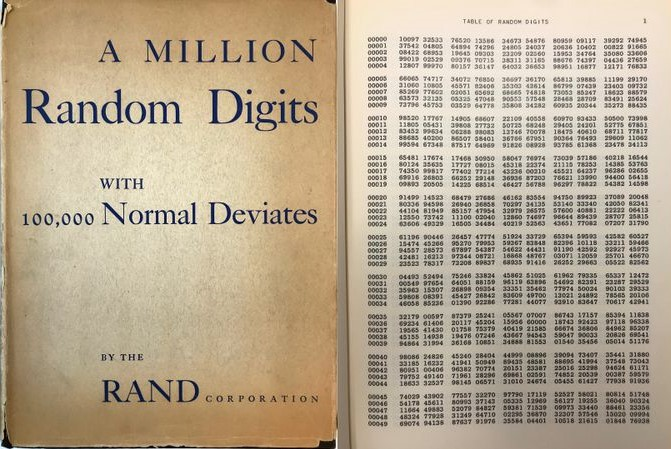Portada del libro A Million Random Digits with 100,000 Normal Deviates (Hammersley 1955).
El procedimiento que se utilizaba para seleccionar de una tabla, de forma manual, números aleatorios en un rango de 1 a \(m\) era el siguiente:
Se selecciona al azar un punto de inicio en la tabla y la dirección que se seguirá.
Se agrupan los dígitos de forma que “cubran” el valor de \(m\).
Se va avanzado en la dirección elegida, seleccionando los valores menores o iguales que \(m\) y descartando el resto.
Números cuasi-aleatorios
Algunos problemas, como la integración numérica (que veremos más adelante en este curso), no dependen realmente de la aleatoriedad de la secuencia. Para evitar generaciones poco probables, se puede recurrir a secuencias cuasi-aleatorias, también denominadas sucesiones de baja discrepancia (hablaríamos entonces de métodos cuasi-Monte Carlo, por ejemplo). La idea sería que la proporción de valores en una región cualquiera sea siempre aproximadamente proporcional a la medida de la región (como sucedería en media con la distribución uniforme, aunque no necesariamente para una realización concreta).
Por ejemplo, el paquete randtoolbox de R implementa métodos para la generación de secuencias cuasi-aleatorias
Secuencias cuasi-aleatorias bidimensionales obtenidas con los métodos de Halton (izquierda), Sobol (centro) y Torus (derecha).
Números pseudo-aleatorios
La mayoría de los métodos de simulación se basan en la posibilidad de generar números pseudo-aleatorios que imiten las propiedades de valores independientes de la distribución \(U \sim (0,1)\), es decir, que imiten las propiedades de una muestra aleatoria simple1 de esta distribución.
El procedimiento habitual para obtener estas secuencias es emplear un algoritmo recursivo denominado generador:
\[x_i = f(x_{i-1}, x_{i-2}, \ldots, x_{i-k})\]
donde: \(k\) es el orden del generador y \((x_{0}, x_{1}, \ldots, x_{k-1})\) es la semilla (estado inicial).
El periodo o longitud del ciclo es la longitud de la secuencia antes de que vuelva a repetirse. Lo denotaremos por \(p\).
Los números de la sucesión son predecibles, conociendo el algoritmo y la semilla. Sin embargo, si no se conociesen, no se debería poder distinguir una serie de números pseudoaleatorios de una sucesión de números verdaderamente aleatoria (utilizando recursos computacionales razonables).
En caso contrario esta predecibilidad puede dar lugar a algunos problemas. Acá se muestran algunos artículos que ejemplifican esta situación:
Como regla general, por lo menos mientras se está desarrollando un código o análisis particular, interesa fijar la semilla de aleatorización.
Permite la reproducibilidad de los resultados.
Facilita la depuración del código.
Tarea: Revisar artículo A search for good pseudo-random number generators: Survey and empirical studies (Bhattacharjee y Das 2022).
La Semilla
Los computadores son máquinas determinísticas, capaces de seguir solamente reglas predeterminadas. La solución es emplear números pseudo aleatorios, que como esquema general, funcionan de la siguiente manera:
Se inicia una secuencia arbitraria de bytes. Los bits de esa secuencia son interpretados como los digitos de un número aleatorio \(Uniforme(0,1)\), expresado de forma binaria hasta una cantidad fija de lugares decimales.
Luego se aplica una compleja función matemática (de forma determinística) que transforma el arreglo (o matriz) de bytes en un nuevo arreglo de bytes. El nuevo arreglo de bytes es técnicamente una función determinista del anterior, pero en la práctica no se parece mucho al arreglo original.
Voltear un solo bit en la matriz de bytes original podría cambiar los bits en cualquier parte de la salida. La nueva matriz se trata como una nueva variable \(Uniforme(0,1)\), y así sucesivamente.
Una ventaja del uso de números pseudo aleatorios es que puede configurar manualmente la matriz de bytes inicial al comienzo de un programa. Esto se denomina la semilla. Lo anterior tiene algunos usos:
Si hay un error en algún programa aleatorio que sólo ocurre algunas veces, puede hacerse perfectamente reproducible y averiguar qué está pasando.
Si se necesita que los resultados de los análisis sean exactamente reproducibles, se puede establecer la semilla en la secuencia de comandos.
Cuando escribe pruebas, puede establecer la semilla y asegurarse de que el resultado sea exactamente el esperado.
En Python
En R
Generando números aleatorios en R
La generación de números pseudo-aleatorios en R es una de las mejores disponibles en paquetes estadísticos. Entre las herramientas implementadas en el paquete base de R podemos destacar:
set.seed(entero): permite establecer la semilla (y el generador).RNGkind(): selecciona el generador.r_distribución(n,...): genera valores aleatorios de la correspondiente distribución. Por ejemplo,runif(n, min = 0, max = 1), generaría \(n\) valores de una uniforme. Se puede acceder al listado completo de las funciones disponibles en el paquetestatsmediante el comando?distributions.sample(): genera muestras aleatorias de variables discretas y permutaciones.simulate(): genera realizaciones de la respuesta de un modelo ajustado.
La Semilla
La semilla se almacena en
.Random.seed:Inicialmente no existe. La recomendación es establecerla con
set.seed(), en caso contrario se generará a partir del reloj del sistema cuando se necesite.Se almacena como un objeto oculto en el entorno de trabajo (o entorno global
.GlobalEnv). Con las opciones por defecto de R, si al terminar una sesión almacenamos el entorno (en un fichero.RData), al iniciar una nueva sesión se restaurará también la semilla (y se podría continuar con las simulaciones).Es un vector de enteros cuya estructura depende del tipo de generador, por lo que no debería ser modificado manualmente.
Puede ser recomendable almacenar (el objeto completo) antes de generar simulaciones, e.g.
seed <- .Random.seed. Esto permite reproducir los resultados y facilita la depuración de posibles errores.
1.5 Práctica: Variables aleatorias Bernoulli
Monedas al aire: Variables aleatorias Bernoulli
Uno de los modelos probabilísticos más intuitivos es simplemente lanzar una moneda (equilibrada o no).
Digamos que la probabilidad de obtener cara es \(p\), por lo tanto, la probabilidad de obtener sello es \(1-p\).
En términos probabilisticos podríamos decir que el lanzamiento de esta moneda corresponde a una Variable aleatoria Bernoulli. También denotado por \(Bernoulli(p)\).
Probemos generando el experimento de manera computacional:
# importando librerías
import matplotlib.pyplot as plt
from scipy.stats import bernoulli
#Datos
p= 0.7 #Probabilidad de ocurrencia
n = 1000 #Tamaño de la muestra
muestras = bernoulli.rvs(p,size=n)
plt.figure(figsize=(5,4))
plt.hist(muestras);
plt.xlabel('Lanzamiento de la moneda')
plt.ylabel('Conteo');
plt.show()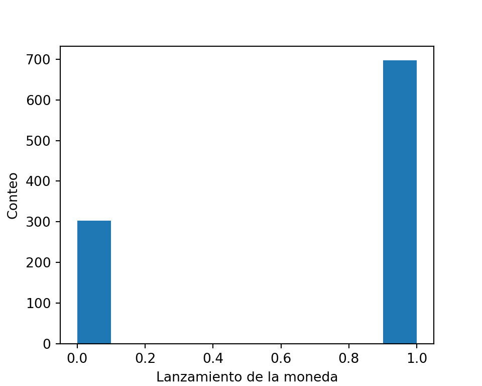
La asignación de \(p=0.7\) a la probabilidad de obtener ‘cara’ y a \(1-p=0.3\) la probabilidad de obtener ‘sello’, es denominado la función de masa de probabilidad, para esta variable aleatoria en particular.
Es conveniente describir la variable aleatoria en términos de números en vez de lados de una moneda. Por convención denominamos \(cara=1\) y \(sello=0\).
Ejemplo
Dos amigos efectúan una apuesta a partir de lanzamiento de una moneda. Un amigo le dice al otro:
Te daré 5 por cada cara que salga y tu me pagarás 2 por cada sello que aparezca.
El pago promedio entonces será: \[ \mathbb{E}(pago) = 0.7 \times 5 + 0.3 \times (-2) = 2.9 \]
Entonces, si lanzamos la moneda \(N\) veces, donde \(N\) es un número muy grande, el pago final será de aproximadamente \((2.9 \times N)\).
Podemos observar cómo una variable aleatoria Bernoulli, podría generalizarse a algo como el lanzamiento de un dado, donde la función de masa de probabilidad asignaría una probabilidad a los números \(0-5\). En este caso, denotamos como \(p_i\) la probabilidad del \(i\)-ésimo resultado. Además:
Todos los \(p_i\) son no negativos, y
\(\sum_{i=0}^n p_i = 1\), con \(n=5\).
Una variable de tipo Bernoulli es denominada una variable aleatoria discreta. Esto significa que:
Tiene un número finito de resultados posibles o
Todos sus posibles resultados pueden ser listados.
1.6 Variables aleatorias Uniformes
Lanzando dardos: Variables aleatorias Uniformes
Lo opuesto a las variables aleatorias discretas, son las variables aleatorias contínuas, que pueden tomar cualquier valor entre un rango de números.
La variable aleatoria contínua más simple para simular es la denominada Uniforme, denotada por \(Uniforme(a,b)\).
Una v.a. \(Uniforme(a,b)\), siempre se encontrará entre los números \(a\) y \(b\) con una probabilidad igual de estar en cualquier lugar dentro de ese rango.
Probemos generando una v.a. \(Uniforme(1,5)\), de manera computacional:
import numpy as np
import matplotlib.pyplot as plt
a, b = 1,5 #Rango
n = 1000 #Tamaño de la muestra
muestras = np.random.uniform(low = a, high = b, size=n)
plt.figure(figsize=(5,4))
count, bins, ignored = plt.hist(muestras, bins = 15, density=True)
plt.plot(bins, np.ones_like(bins)/(b-a), linewidth=2, color='r')
plt.xlim([0, 6]); plt.ylim([0, 1])
plt.xlabel('x')
plt.ylabel('Probabilidad');
plt.show()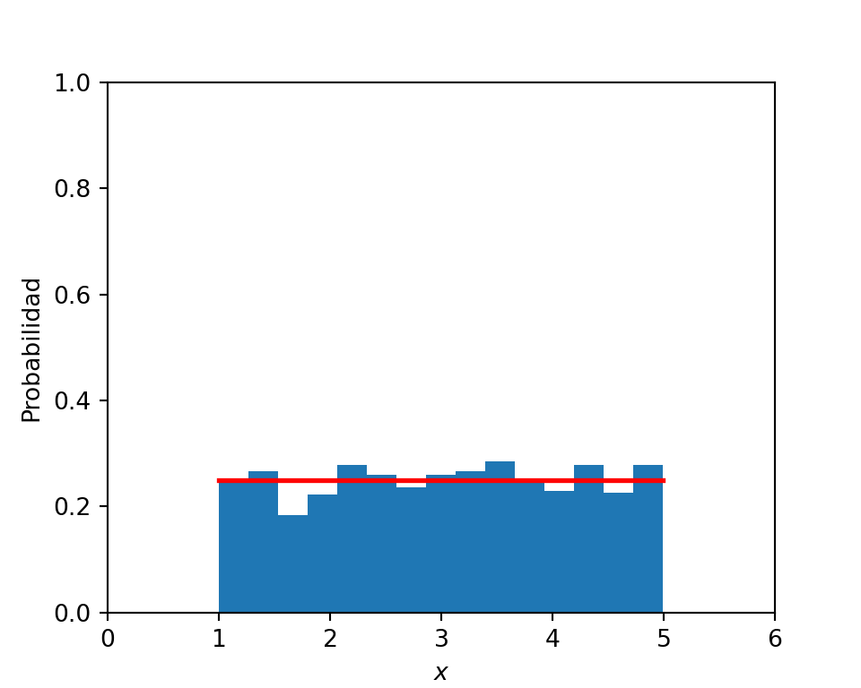
Para v.a. discretas, la función de masa de probabilidad asigna una probabilidad finita a cada resultado posible. Para v.a. continuas, cada resultado exacto, tiene probabilidad 0, pero ciertos rangos tienen mayor probabilidad que otros. Denominamos a esta función la función de densidad de probabilidad (pdf, por su sigla en inglés: probability density function). En el caso de la v.a. Uniforme, su pdf es:
\[p(x) = \frac{1}{(b-a)}\]
Un recordatorio…
-
Similar a las funciones de masa de probabilidad, las restricciones de la pdf \(f\) son:
\(f(x)\) no es nunca negativa, y
El área total bajo la curva de \(f(x)\) es igual a 1.
Cualquier \(f\) que cumple estos requisitos, es una pdf válida.
Relacionado con la pdf, está la Función de distribución acumulada (cdf, por su sigla en inglés: cummulative distribution function). Por convención, se utiliza la munúscula \(f()\) para denotar a la pdf, y la mayúscula \(F()\) para denotar a la cdf.
\(F(x)\) es la probabilidad de que el valor de una variable aleatoria sea \(\leq x\). Así, \(F(x)\) es una función no decreciente que se aproxima a cero cuando \(x \to -\infty\) y se aproxima a uno cuando \(x \to \infty\).
Distribución Uniforme y los números pseudo-aleatorios
La distribución Uniforme es una de las más sencillas de entender y constituye la base para construir distribuciones más complejas, en términos teóricos y matemáticos.
Por ejemplo:
Si se quiere simular una v.a. \(Bernoulli(p)\), se puede simular una variable aleatoria \(u\) desde una distribución \(Uniforme(0,1)\). Si \(u<p\), se establece \(B=cara\). Si no, \(B=sello\).
Si se quiere simular el lanzamiento de un dado, se puede dividir el rango \([0.0, 1.0]\) en seis regiones, donde la \(i\)-ésima región corresponde a la \(i\)-ésima cara del dado. Luego, se extrae un valor \(u\) desde la distribución \(Uniforme(0,1)\). La cara del dado corresponderá a la región \([0.0, 1.0]\) en que \(u\) caiga.
Si queremos simular una v.a. \(Exponencial\) (que veremos más adelante), se extrae \(u\) desde una distribución \(Uniforme(0,1)\), Luego se calcula \(-Log(u)\).
Digamos que conocemos la cdf \(F_X()\) de una v.a., y que además, podemos computar la inversa de la cdf \(F_X^{-1}(u)\), entonces:
Entonces \(F_X^{-1}(u)\) será una muestra de \(X\) si \(u\) es extraída desde una distribución \(Uniforme\).
Las librerías computacionales que simulan v.a. usualmente muestrean desde la distribución \(Uniforme\) como su operación fundamental.
Ejercicios
Probar simulando distribuciones a partir de números pseudo-aleatorios, graficar los resultados y comprobar con el generador de distribuciones:
Simular 1000 números aleatorios a partir de una distribución exponencial, con \(\lambda = 0.5\) (fijarse en la parametrización del código).
Simular 1000 números aleatorios a partir de una distribución normal, con \(\mu = 10\), y \(\sigma^2 = 3\).
Simular 1000 números aleatorios a partir de una distribución chi-cuadrado, considere que el cuadrado de una distribución normal estándar se distribuye chi cuadrado con 1 grado de libertad.
Transformación de variables y relación entre distribuciones

Ejemplo de algunas relaciones entre distribuciones univariadas
Enlaces con información más detallada:
2 Generación de números pseudo-aleatorios
2.1 Contexto
-
En los primeros días de la simulación, la aleatoriedad se generaba mediante técnicas manuales:
lanzamiento de monedas
lanzamiento de dados
barajada de cartas
giro de la ruleta
Más tarde, se conectaron dispositivos físicos, como diodos de ruido y contadores Geiger, a las computadoras con el mismo propósito.
La creencia predominante sostenía que solo los dispositivos mecánicos o electrónicos podían producir secuencias verdaderamente aleatorias.
-
Aunque los dispositivos mecánicos todavía son de utilidad en el juego y las loterías, estos métodos ya no son empleados en aplicaciones computacionales y de análisis por varios motivos:
Los métodos mecánicos eran demasiado lentos para uso general,
las secuencias generadas no pueden ser reproducidas y,
se ha encontrado que los números generados exhiben tanto sesgo como dependencia.
Aunque ciertos métodos físicos de generación modernos son rápidos y pasarían la mayoría de las pruebas estadísticas de aleatoriedad (por ejemplo, aquellos basados en la radiación de fondo universal o en el ruido de un chip de PC), su principal desventaja sigue siendo su falta de reproducibilidad
La mayoría de los generadores de números aleatorios de hoy en día no se basan en dispositivos físicos, sino en algoritmos simples que se pueden implementar fácilmente en una computadora.
Son métodos rápidos, requieren poco espacio de almacenamiento y pueden reproducir fácilmente una secuencia dada de números aleatorios.
Es importante destacar que un buen generador de números aleatorios captura todas las propiedades estadísticas importantes de las secuencias aleatorias verdaderas, aunque la secuencia se genere mediante un algoritmo determinista. Por esta razón, a estos generadores a veces se les llama pseudorandom.
El componente fundamental de un estudio de simulación es la capacidad de generar números aleatorios, donde un número aleatorio representa el valor de una variable aleatoria distribuida uniformemente en (0,1).
Mientras que originalmente los números aleatorios se generaban manual o mecánicamente, utilizando técnicas como girar ruedas, lanzar dados o barajar cartas, el enfoque moderno es utilizar computación para generar sucesivamente números pseudo aleatorios Estos números pseudo aleatorios constituyen una secuencia de valores que, aunque se generan de manera determinista, tienen todas las apariencias de ser variables aleatorias uniformes independientes (0,1).
2.2 Métodos Congruenciales
Consideremos la siguiente secuencia de 100 números, generada en R, parecen ser aleatorios, ¿cierto?:
[1] 0.50000000 0.40810728 0.58342256 0.19995311 0.61707744 0.18960591
[7] 0.20656207 0.75336388 0.42318121 0.65187749 0.56721709 0.73441689
[13] 0.83104986 0.45814651 0.44273811 0.61666370 0.77680949 0.72995251
[19] 0.80450243 0.83649141 0.25332014 0.96528698 0.31478070 0.29105900
[25] 0.59410869 0.54647416 0.32911075 0.60207293 0.33499109 0.88276385
[31] 0.55832126 0.35890085 0.58913651 0.71756336 0.97617735 0.88747819
[37] 0.75549994 0.88394823 0.11250067 0.87996813 0.89692892 0.26651384
[43] 0.79663157 0.33197375 0.68261844 0.91709167 0.35257423 0.85665304
[49] 0.75645357 0.98427681 0.57663485 0.68933159 0.12133686 0.86093372
[55] 0.23784003 0.77707536 0.04337541 0.73695267 0.69647589 0.84394413
[61] 0.62048056 0.59188530 0.38397178 0.68232607 0.60448698 0.70890958
[67] 0.42190796 0.62456833 0.69495839 0.19879479 0.89549425 0.35971429
[73] 0.20010115 0.70937298 0.93135996 0.84816307 0.95432161 0.80084249
[79] 0.40745700 0.06738798 0.27926031 0.45948509 0.56740071 0.90814229
[85] 0.26360899 0.84046038 0.23310057 0.69491270 0.14929459 0.98018450
[91] 0.65912623 0.10144566 0.72397223 0.10739251 0.02506461 0.42364202
[97] 0.02403674 0.90719104 0.98491985 0.50861252 0.01697735Los números pseudo aleatorios tienen la apariencia de ser aleatorios. Sin embargo son generados de una manera muy poco aleatoria. Tomemos por ejemplo la siguiente fórmula recursiva
\[ x_{i+1} = \mbox{parte fraccional de }(\pi + x_i )^5 \qquad \mbox{para } i\geq 0 \]
donde \(x_0\) es un número dado que se encuentra en el rango \(0 < x_0 < 1\)
Tarea: Replicar la secuencia de números presentada anteriormente (en R y/o Python).
Uno de los enfoques más comunes para generar números pseudo aleatorios comienza con un valor inicial \(x_0\), llamado la semilla, y luego calcula recursivamente los valores sucesivos \(x_i\), para \(i \geq 1\), dejando que
\[ x_{i+1} = a x_{i} + b \mod m \qquad(1)\]
donde \(a\) (multiplicador), \(b\) (incremento) y \(m\) (módulo) son constantes enteras positivas dadas, y donde lo anterior significa que \(ax_{i}+b\) se divide por \(m\) y el resto se toma como el valor de \(x_{i+1}\). Así, cada \(x_i\) es \(0, 1, \ldots, m - 1\) y la cantidad \(\frac{x_i}{m}\), llamada número pseudo aleatorio, se toma como una aproximación al valor de la variable aleatoria uniforme (0,1) \(\sim U(0,1)\).
Método Congruencial Aditivo \[ x_i = (x_{i-1} + b) \mod m\]
Método Congruencial Multiplicativo \[ x_i = a x_{i-1} \pmod m\]
Método Congruencial Mixto \[ x_i = (a x_{i-1} + b) \pmod m\]
Ejemplos:
Probemos algunas combinaciones de parámetros y sus resultados:
\(x_0 = 89, a=1573, b=19, m=10^3\).
\(b=0, a=2^{16} + 3\) y \(m=2^{31}\), generador RANDU de IBM. Este generador tiene varios problemas, que pueden ser descritos acá. Wolfram.com entrega una visualización referente a este mismo problema.
\(b=0, a=7^5\) y \(m=2^{31}-1\), el primo de Mersenne, empleado por librerías IMSL (International Mathematics and Statistics Library) y NAG (Numerical Algorithms Group Ltd.), propuesto por Park y Miller (1988).
\(b=0, a=48271\) y \(m=2^31 -1\), actualización del anterior, propuesta por Marsaglia et al. (1993).
Algunas consideraciones
La elección de las constantes \(a, b\) y \(m\) tiene un razonamiento que considera varios objetivos. Para empezar, se quiere que la aritmética sea eficiente. Los seres humanos hacen aritmética en base 10, así que si la Ecuación 1 se operara manualmente, usando lápiz y papel, sería sensato que \(m\) fuera alguna potencia entera positiva de 10.
-
Si uno calcula naturalmente en base numérica \(r\), entonces la operación de división por \(m\) es más eficiente si \(m = r^k\) para algún entero positivo \(k\).
- Para la mayoría de los computadores, esto implica establecer \(m = 2^k\), donde \(k\) se selecciona para que \(m\) sea “grande” y los números involucrados estén dentro de la precisión de la máquina.
Definición:
El generador de la Ecuación 1 no puede producir más de \(m\) números diferentes antes de que el ciclo se repita. Sea \(p\) el período de una secuencia, cuando \(p\) es igual a su máximo, es decir, \(p=m\). Decimos que el generador de números aleatorios tiene un período completo.
Teorema: Hull-Dobell (Generador de período completo) Sea el Generador Congruencial Lineal (GCL) de la forma: \[ x_i = (a x_{i-1} + b) \pmod m\]
Para \(b > 0\), el GCL tiene un período completo si y solo si se cumplen las siguientes tres condiciones (Morgan 2018):
El único entero positivo que divide exactamente tanto a \(m\) como a \(b\) es 1.
Si \(q\) es un número primo (divisible solo por sí mismo y 1) que divide a \(m\), entonces \(q\) divide a \((a-1)\). Es decir, \(a \equiv 1 \pmod{q}\), para todo factor primo \(q\) de \(m\). Dicho de otra manera, \((a-1)\) es múltiplo de cada número primo que divide a \(m\).
Si 4 divide a \(m\), entonces 4 divide a \((a-1)\). Es decir, \(a \equiv 1 \pmod{4}\), si \(m\) es múltiplo de 4.
Si \(m = 2^k\), la relación (iii) implicaría que \(a = 4b + 1\) para \(b\) entero positivo, lo cual también satisface la relación (ii).
Cuando \(m = 2^k\), la relación (i) se logra fácilmente estableciendo \(b\) como cualquier constante positiva impar.
2.3 Propiedades de los generadores congruenciales
Se podría esperar que los números resultantes del generador congruencial mixto (Ecuación 1) tengan dependencias inusuales, y esto puede ser ilustrado en lo siguiente:
Sea \(x_{i+1} = 5x_i \pmod{m}\)
Aquí, \(x_{i+1} = 5x_i - h_{i}m\), donde \(h\) toma uno de los valores 0, 1, 2, 3, 4.
Por lo tanto, los pares de valores sucesivos \((x_i, x_{i+1})\) representan las coordenadas cartesianas de puntos que se encuentran en una de las cinco rectas dadas por la ecuación, y cuanto mayor es \(m\), más larga será la secuencia de números generados que permanecerá en una de estas líneas antes de pasar a otra.
Ejemplo:
Si \(x_1 = 1\) y \(m = 11\), entonces: \[x_1 = 5, x_2 = 3, x_3 = 4, x_4 = 9, x_5 = 1\]
y la línea utilizada cambia con cada iteración.
Sin embargo, si \(x_1 = 1\) y \(m = 1000\), entonces: \[x_1 = 5, x_2 = 25, x_3 = 125, x_4 = 625, x_5 = 125\]
y la secuencia de \(x_1\) a \(x_4\) se obtiene de la línea \(x_{i+1} = 5x_i\), tras lo cual la secuencia degenera en una alternancia simple. Pares de valores sucesivos dan puntos que yacen en un número limitado de líneas rectas, tríos de valores sucesivos se encuentran en un número limitado de planos, etc.
Ejemplo:
Si tomamos el generador congruencial dado por: \[ x_{n-1} = 781 x_n + 387 \pmod{1000}\] con \(u_i = x_i/1000\), para \(0 \leq i \leq 999\).
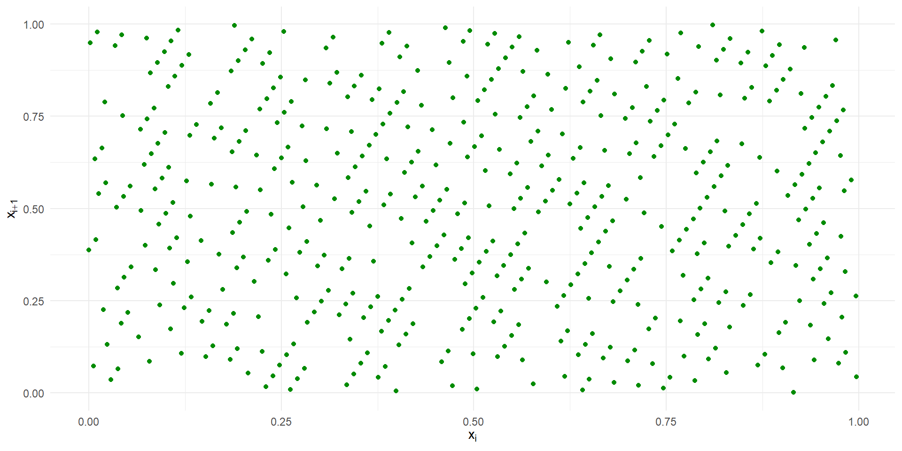
La marcada tendencia de vacíos en el plano se debe al pequeño valor de \(m\) utilizado, lo que también permite observar el tipo de patrón que puede aparecer. Por lo tanto, en muchos casos, se sugiere modificar la salida de los generadores congruenciales antes de ser utilizada, lo cual siempre implica una revisión.
-
Una manera de modificar la salida es tomar los números en grupos de tamaño \(g\), para luego mezclarlos mediante una permutación, antes de ser utilizados.
Un enfoque alternativo, propuesto por MacLaren y Marsaglia (1965), es tener un conjunto de \(g\) números almacenados, a partir de generador congruencial, y elegir cuál de estos números usar a continuación mediante un dígito indicador aleatorio del rango 1 a \(g\), obtenido, por ejemplo, por un generador congruencial separado. El lugar que dejó el número utilizado del conjunto es reemplazado entonces con el siguiente número del generador original, y así sucesivamente.
Ejemplo:
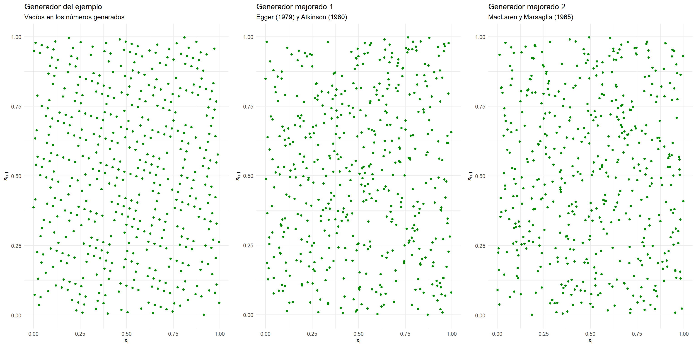
2.4 Método de los Cuadrados Medios
Otra alternativa para generar números pseudo-aleatorios es utilizar el Método de los Cuadrados Medios. Este método tiene la desventaja de que en generan resulta en un período corto. Al aplicarlo repetidamente, el método tiende a producir el mismo número de manera recurrente o entra en un ciclo, repitiendo una secuencia de números anterior, lo que resulta en un bucle infinito. Esto limita su efectividad para generar secuencias de números aleatorios confiables y variados.
Método de los cuadrados medios
Se inicia con un número entero positivo de cuatro dígitos \(x_0\), posteriormente se debe seguir la siguiente secuencia:
Elevar al cuadrado \(x_0\) para obtener un entero de hasta ocho dígitos; si es necesario, añadir ceros a la izquierda para que tenga exactamente ocho dígitos.
Tomar los cuatro dígitos del medio de este número de ocho dígitos como el siguiente número de cuatro dígitos \(x_1\).
Colocar un punto decimal a la izquierda de \(x_1\) para obtener el primer número aleatorio \(u_1 \sim U(0,1)\).
Repetir los pasos 1 a 3 \(n\) veces para generar un vector de números aleatorios de largo \(n\).
3 Analizando la calidad de los números pseudo aleatorios
Para verificar si un generador tiene las propiedades estadísticas deseadas hay disponibles una gran cantidad de test de hipótesis y métodos gráficos, incluyendo métodos genéricos (de bondad de ajuste y aleatoriedad) y contrastes específicos para generadores aleatorios. Se trata principalmente de contrastar si las muestras generadas son i.i.d. \(U(0,1)\).
Hay que destacar algunas diferencias entre el uso de este tipo de métodos en inferencia y en simulación.
Si empleamos un test de hipótesis del modo habitual, desconfiamos del generador si la muestra (secuencia) no se ajusta a la distribución teórica \((\mbox{p-valor} \leq \alpha)\).
En simulación, además, también se sospecha si se ajusta demasiado bien a la distribución teórica \((\mbox{p-valor} \geq 1-\alpha)\), lo que indicaría que no reproduce adecuadamente la variabilidad.
3.1 Métodos de bondad de ajuste
A partir de \(x_1, \ldots, x_n\) m.a.s. de \(X\) con función de distribución \(F\), establecemos un test de hipótesis de la forma
\[\left\{\begin{matrix} H_0 : F = F_0\\ H_1: F \neq F_0 \end{matrix}\right.\]
Histograma
Agrupando los datos en intervalos \(I_k = \left[ L_{k-1}, L_{k} \right)\) con \(k = 1, \ldots, K\) y a cada intervalo se le asocia un valor (altura de la barra) igual a la frecuencia absoluta de ese intervalo \(n_{k} = \sum_{i=1}^{n} \mathbf{1} \left( X_i \in \left[ L_{k-1}, L_{k} \right) \right)\), si la longitud de los intervalos es constante, o proporcional a dicha frecuencia (de forma que el área coincida con la frecuencia relativa y pueda ser comparado con una función de densidad):
\[\hat{f}_{n}(x) = \frac{n_i}{n(L_k - L_{k-1})} \]
Ejemplo:
datos <- c(22.56,22.33,24.58,23.14,19.03,26.76,18.33,23.10,
21.53,9.06,16.75,23.29,22.14,16.28,18.89,27.48,10.44,
26.86,27.27,18.74,19.88,15.76,30.77,21.16,24.26,22.90,
27.14,18.02,21.53,24.99,19.81,11.88,24.01,22.11,21.91,
14.35,11.14,9.93,20.22,17.73,19.05)
hist(datos, freq = FALSE)
curve(dnorm(x, mean(datos), sd(datos)), add = TRUE)Función de distribución empírica
La función de distribución empírica \(F_n(x) = \frac{1}{n} \sum_{i=1}^n \mathbf{1} (X_i \leq x)\) asigna a cada número real \(x\) la frecuencia relativa de observaciones menores o iguales que \(x\). Para obtener las frecuencias relativas acumuladas, se ordena la muestra \(X_{(1)} \leq X_{(2)} \leq \cdots \leq X_{(n)}\) y
\[ F_n (x) = \left\{\begin{matrix} & 0 & si \quad & x > X_{(1)}\\ & \frac{i}{n} & si \quad & x > X_{(i)} \leq x \leq X_{(i+1)} \\ & 1 & si \quad & X_{(n)} \leq x \end{matrix}\right.\]
Ejemplo
Prueba Chi cuadrado
La prueba chi cuadrado de bondad de ajuste es adecuada en términos de probar si existe diferencia significativa entre un número observaciones clasificado en distintas categorías y su valor esperado. Por lo anterior, puede ser utilizada para comprobar si la muestra sigue algún tipo de distribución determinado.
Este test de hipótesis desarrollado inicialmente para variables categóricas. En el caso general, podemos pensar que los datos están agrupados en \(k\) clases \(C_1, \ldots, C_n\).
Si la variable es categórica o discreta, cada clase se puede corresponder con una modalidad. Si la variable es contínua habrá que categorizarla en intervalos.
Si la hipótesis nula es simple, cada clase tendrá asociada una probabilidad \(p_i = P(X \in C_i)\) bajo \(H_0\).
Si por el contrario es compuesta, se trabajará con una estimación de dicha probabilidad (y habrá que correguir la distribución aproximada del estadístico del contraste).
| Clases | Discreta | Contínua | \(H_0\) simple | \(H_0\) compuesta |
|---|---|---|---|---|
| \(C_1\) | \(x_1\) | \(\left[ L_0, L_1 \right)\) | \(p_1\) | \(\hat{p}_1\) |
| \(\vdots\) | \(\vdots\) | \(\vdots\) | \(\vdots\) | \(\vdots\) |
| \(C_k\) | \(x_k\) | \(\left[ L_{k-1}, L_{k} \right)\) | \(p_k\) | \(\hat{p}_k\) |
| \(\sum_{i=1}^k p_i = 1\) | \(\sum_{i=1}^k \hat{p}_i = 1\) |
Hipótesis
Sea \(F(x)\) la distribución verdadera, pero desconocida de \(X\) y sea \(F^*(x)\) una distribución hipotética, especificada completamente.
\[\begin{eqnarray*} H_0&:& F(x) = F^*(x) \qquad \mbox{La función de distribución de la v.a. es $F^*(x)$.}\\ H_1&:& F(x) \neq F^*(x) \qquad \mbox{La función de distribución de la v.a. es distinta de $F^*(x)$.} \end{eqnarray*}\]
Si \(H_0\) es cierta, la frecuencia relativa \(f_i\) de la clase \(C_i\) es una aproximación de la probabilidad teórica, \(f_i \approx p_i\). Equivalentemente, las frecuencias observadas \(n_i = n \dot f_i\) deberían ser próximas a las esperadas \(e_i = n \dot p_i\) bajo \(H_0\), sugiriendo el estadístico del contraste (Pearson 1900):
\[\begin{equation*} T = \sum_{i=1}^k \frac{(n_i - e_i)^2}{e_i} \sim \chi^2_{k-r-1} \end{equation*} \qquad \mbox{Si se cumple $H_0$}\]
donde \(k\) el número de clases y \(r\) el número de parámetros estimados del test de hipótesis compuesto.
| Clases | \(n_i\) observadas | \(p_i\) bajo \(H_0\) | \(e_i\) bajo \(H_0\) | \(\frac{(n_i - e_i)^2}{e_i}\) |
|---|---|---|---|---|
| \(C_1\) | \(n_1\) | \(p_1\) | \(e_1\) | \(\frac{(n_1 - e_1)^2}{e_1}\) |
| \(\vdots\) | \(\vdots\) | \(\vdots\) | \(\vdots\) | \(\vdots\) |
| \(C_k\) | \(n_k\) | \(p_k\) | \(e_k\) | \(\frac{(n_k - e_k)^2}{e_k}\) |
| Total | \(\sum_{i=1}^k n_i = n\) | \(\sum_{i=1}^k p_i = 1\) | \(\sum_{i=1}^k e_i = n\) | \(T = \sum_{i=1}^k \frac{(n_i - e_i)^2}{e_i}\) |
con \(p_i^*\) la probabilidad que una observación cualquiera de \(X\) pertenezca a la clase \(i\). Bajo el supuesto de que \(F^*(x)\) es la función de distribución de \(X\). Siendo \(e_i\) la esperanza de las observaciones de la clase \(i\) bajo el supuesto de que \(H_0\) es verdadero.
Dócima de hipótesis
Rechazamos \(H_0\) con un nivel \(\alpha\) de significancia, si
\[\sum_{i=1}^k \frac{(n_i - e_i)^2}{e_i} \geq \chi_{k-r-1, 1-\alpha}^2\]
Si se efectúa el contraste a partir del p-valor o nivel crítico
\[p = P \left( \chi_{k-r-1}^2 \geq \sum_{i=1}^k \frac{(n_i-e_i)^2}{e_i} \right)\]
se rechaza \(H_0\) si \(p \leq \alpha\) y se aceptará \(H_0\) si \(p > \alpha\).
Ejemplo Un ejemplo empleando la función chisq.test en R, para el caso discreto. Probaremos evaluar el generador de números aleatorios de R:
Algunas consideraciones para el caso contínuo:
El tamaño muestral debe ser suficientemente grande (e.g. \(n > 30\)).
La muestra debe ser una muestra aleatoria simple.
Los parámetros deben estimarse (si es necesario) por máxima verosimilitud.
Las frecuencias esperadas \(e_i = n \cdot p_i\) deberían ser todas \(\geq 5\).
# En el caso contínuo, agrupamos las observaciones en percentiles.
x = runif(100)
quant = quantile(x = x, probs = c(seq(from=0, to=1, by=(1/6))))
quant 0% 16.66667% 33.33333% 50% 66.66667% 83.33333%
0.006246689 0.130709554 0.300613914 0.461148495 0.730929349 0.901319154
100%
0.999931238
(0.00625,0.131] (0.131,0.301] (0.301,0.461] (0.461,0.731] (0.731,0.901]
16 17 16 17 16
(0.901,1]
17
Chi-squared test for given probabilities
data: table(cut(x, quant))
X-squared = 0.090909, df = 5, p-value = 0.9999Prueba de Kolmogorov-Smirnov
Prueba que mide el grado de acuerdo entre distribución de un conjunto de valores muestreados (observaciones) y alguna distribución teórica específica.
Sea \(X_1, X_2, ..., X_n\) una muestra aleatoria. La función de distribución empírica \(S(x)\) (o también denominada FDE) es una función de \(x\), que iguala la fracción de los \(X_i\)s que son menores que , o iguales a \(x\), para cada \(x\), \(-\infty < x < \infty\). La FDE es siempre una función del tipo escalón, que aumenta en \(\frac{1}{n}\) en cada valor de la muestra.
Una forma de comparar la muestra aleatoria, con la distribución \(F^*(x)\), especificada completamente, es a través de la FDE \(S(x)\).
\(S(x)\) es de ayuda en la estimación de \(F(x)\), la distribución desconocida de los \(X_i\)s. Entonces, podemos comparar la FDE \(S(x)\) con una función de distribución hipotética \(F(x)'\), y evaluar su ajuste.
El test de Kolmogorov-Smirnov evalúa la distancia más grande entre \(S(x)\) y \(F(x)'\) asociados a los valores de la muestra
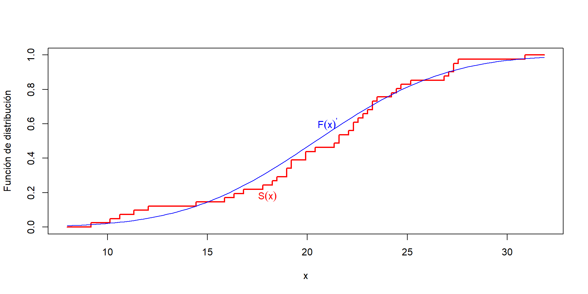Ejemplo de la FDE \(S(x)\) vs una función de distribución conocida \(F(x)'\) para una muestra.
Sea una muestra aleatoria \(X_1, X_2, ..., X_n\) de tamaño \(n\) y asociada a alguna distribución desconocida denotada por \(F(x)\).
Estadístico de prueba: Sea \(S(x)\) la FDE basada en la muestra aleatoria \(X_1, X_2, ..., X_n\), definida anteriormente. El estadístico de prueba \(T\), denotado por el supremo de la diferencia entre \(S(x)\) y \(F^*(x)\), se define para la hipótesis de dos colas de la siguiente manera:
\[ T = \underset{x}{sup}|F(x)' - S(x)| \]
Hipótesis para dos colas: Sea \(KS_{1-\alpha}\) el cuantil \(1-\alpha\) de la distribución del estadístico \(T\).
\[\begin{eqnarray*} H_0 &:& F(x) = F^*(x) \qquad \forall x \in ]-\infty, \infty [\\ H_1&:& F(x) \neq F^*(x) \qquad \mbox{Para al menos un valor de $x$} \end{eqnarray*}\]
Si \(T > KS_{(1-\alpha)}\), rechazar \(H_0\), si no, no rechazar.
Ejemplo: Sean los siguientes datos generados por un generador de números aleatorios con distribución \(X \sim N(\mu = 20, \sigma = 5)\).
datos <- c(22.56,22.33,24.58,23.14,19.03,26.76,18.33,23.10,
21.53,9.06,16.75,23.29,22.14,16.28,18.89,27.48,10.44,
26.86,27.27,18.74,19.88,15.76,30.77,21.16,24.26,22.90,
27.14,18.02,21.53,24.99,19.81,11.88,24.01,22.11,21.91,
14.35,11.14,9.93,20.22,17.73,19.05)
ks.test(datos, pnorm, mean = 20, sd = 5) # Una muestra
Asymptotic one-sample Kolmogorov-Smirnov test
data: datos
D = 0.13239, p-value = 0.4688
alternative hypothesis: two-sided4 Aplicación: Uso de RNG para evaluar integrales
4.1 Caso univariado
Una de las aplicaciones más intuitivas de los generadores de números aleatorios es la aproximación de integrales. Sea \(g(x)\) una función y supongamos que queremos calcular \(\theta\) donde
\[ \theta = \int_{0}^{1} g(x) dx\]
Para calcular el valor de \(\theta\) podemos emplear \(U\), que se encuentra distribuído uniformemente entre \((0,1)\). Entonces podemos escribir \(\theta\) como
\[ \theta = \mathbb{E}\left[ g(U) \right]\]
Si \(U_1, \ldots, U_k\) son variables aleatorias i.i.d Uniformes en \((0,1)\), la transformación de las variables aleatorias \(g(U_1), \ldots g(U_k)\) son también variables aleatorias i.i.d con media \(\theta\). Entonces por la Ley Fuerte de los Grandes Números se tiene que con probabilidad 1
\[ \sum_{i=1}^{k} \frac{g(U_i)}{k} \rightarrow \mathbb{E}\left[ g(U) \right] = \theta \qquad \mbox{cuando } k\rightarrow \infty \]
Entonces, es posible aproximar \(\theta\) al generar una gran cantidad de números aleatorios \(u_i\) y considerarlos como una aproximación al valor esperado de \(g(u_i)\). Este enfoque para aproximar integrales es conocido como el Método Monte Carlo.
Si se quiere efectuar una estimación de una integral de la siguiente forma
\[\int_{a}^{b} g(x) dx\]
Podemos hacer la sustitución de \(u = \frac{x-a}{b-a}\) cuando \(x \rightarrow a\), entonces cuando \(x \rightarrow b\), \(u \rightarrow 1\). Además tenemos que \(du = \frac{dx}{b-a}\), lo que implica que \(x = (b-a)u +a\), y \(dx = (b-a)du\).
Entonces, podemos escribir la integral de la siguiente manera
\[\int_{0}^{1} g((b-a)u+a)(b-a) du = \int_{0}^{1} h(u) du\]
con \(h(u) = (b-a)g(a+(b-a)u)\)
4.2 Caso multivariado
Digamos que ahora \(g\) es una función con argumento \(n\)-dimensional y estamos interesados en el cálculo de la siguiente integral multivariada
\[ \theta = \int_{0}^{1} \int_{0}^{1} \cdots \int_{0}^{1} g(x_1, x_2, \ldots, x_n) \, dx_1 \, dx_2 \cdots dx_n \]
La aproximación de Monte Carlo para estimar \(\theta\) puede expresarse como el valor esperado:
\[ \theta = \mathbb{E}[g(U_1, U_2, \ldots, U_n)] \]
donde \(U_1, U_2, \ldots, U_n\) son v.a. i.i.d. uniformes en \((0,1)\).
Entonces, generando \(k\) conjuntos independientes, cada uno de \(n\) v.a. independientes uniformes \((0,1)\)
\[ \begin{matrix} U_{11} & U_{12} & \cdots & U_{1n} \\ U_{21} & U_{22} & \cdots & U_{2n} \\ \vdots & \vdots & \ddots & \vdots \\ U_{k1} & U_{k2} & \cdots & U_{kn} \end{matrix} \]
Dado que \(g(U_{i1}, U_{i2}, \ldots, U_{in})\) para \(i=1, \ldots, k\), son todas v.a. i.i.d. con media \(\theta\), podemos estimar \(\theta\) como
\[ \theta \approx \frac{1}{k} \sum_{i=1}^{k} g(U_{i1}, U_{i2}, \ldots, U_{in}) \]
4.3 Ejemplos
Ejemplo 1
Ejemplo 1: Aproximar la siguiente integral por el Método de Monte Carlo
\[\int_{0}^{1} e^{-x^2}dx\]
Solución: Primero escribimos la función, y evaluamos su forma gráficamente
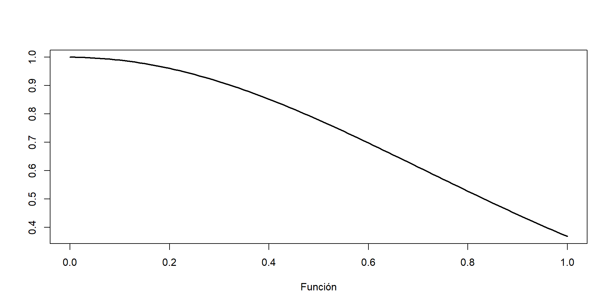Luego, generamos 1000 números aleatorios en el intervalo \((0,1)\), evaluamos cada valor de la secuencia generada y computamos la media de los resultados.
Podemos evaluar gráficamente la convergencia de nuestra aproximación de la integral
Además, comparamos con la estimación que efectúa R directamente
Ejemplo 2
Ejemplo 2: Aproximar la siguiente integral por el Método de Monte Carlo
\[\int_{-2}^{2} \left[ cos(50x) + sin(20x) \right]^2 dx\]
Solución: Primero escribimos la función, y evaluamos su forma gráficamente
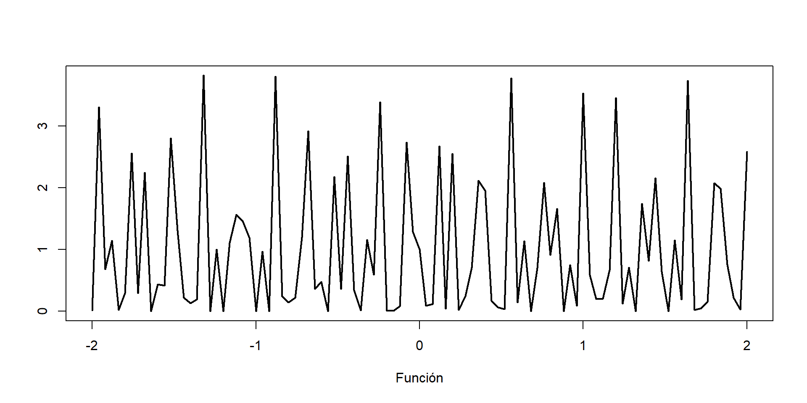Generamos una secuencia suficientemente larga de números aleatorios en el intervalo \((0,1)\). Luego evaluamos cada valor de \(U\) con la sustitución \(h(u) = (b-a)g(a+(b-a)u)\) y promediamos los resultados.
También podemos evaluar gráficamente la convergencia de nuestra aproximación de la integral y comparamos con el valor estimado de la integral en R.
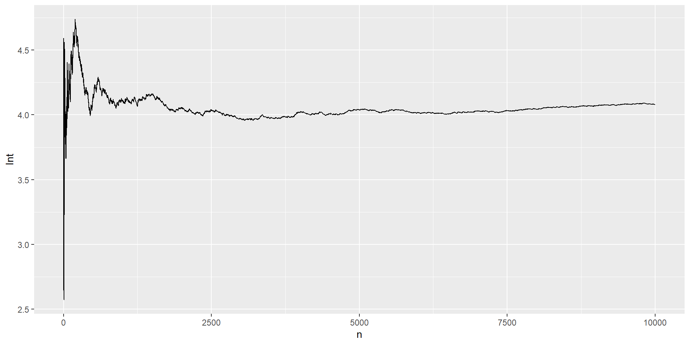Ejemplo 3
Ejemplo 2: Aproximar la siguiente integral multivariada por el Método de Monte Carlo
\[\int_{0}^{1} \int_{0}^{1} (x_1^2 + x_2^2) dx_2 dx_1\]
Solución: Siguiendo el procedimiento, consideramos \(X = [x_1, x_2]\), generamos la función y luego simulamos valores de \(U=[u_1, u_2]\) en el intervalo \((0,1)\).
g = function(X){
X[1]^2+X[2]^2
}
set.seed(2024)
U1 = runif(10000)
U2 = runif(10000)
U = cbind(U1,U2)
head(U) U1 U2
[1,] 0.8369425 0.7541860
[2,] 0.3208675 0.4017094
[3,] 0.6803633 0.5151423
[4,] 0.6981731 0.3301014
[5,] 0.4570092 0.1025579
[6,] 0.7014203 0.6809831Se evalúa cada valor de \(U\) en la función \(g\) y se extrae la media
Evaluamos la convergencia de la estimación de la integral
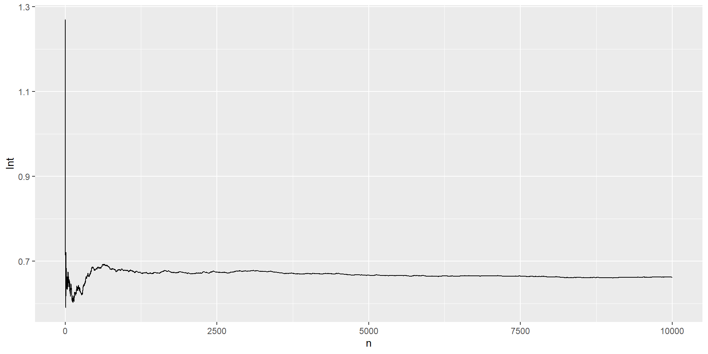Evaluando de manera analítica la integral
\[\begin{eqnarray} \theta & = \int_{0}^{1} \int_{0}^{1} (x_{1}^{2} + x_{2}^{2}) \, dx_{2} \, dx_{1} \\ & = \int_{0}^{1} \left. \left(\frac{1}{3}x_{2}^{3} + x_{1}^{2}x_{2} \right) \right|_{x_{2}=0}^{x_{2}=1} \, dx_{1} \\ & = \int_{0}^{1} \left(x_{1}^{2} + \frac{1}{3} \right) \, dx_{1} \\ & = \left. \left(\frac{1}{3}x_{1}^{3} + \frac{1}{3}x_{1} \right) \right|_{x_{1}=0}^{x_{1}=1} \\ & = \frac{1}{3} + \frac{1}{3} = \frac{2}{3} = 0.6666667 \end{eqnarray}\]
4.4 Estimando el valor de \(\pi\)
La idea detrás de esta simulación es generar puntos aleatorios uniformes \((x, y)\) dentro del dominio. Al estimar \(\pi\), el dominio es el sistema de coordenadas cartesianas bidimensional del cuadrado delimitador de un círculo. Para cada punto generado calculamos la distancia al origen para determinar si la coordenada simulada cae dentro del círculo. Luego agregamos los resultados y aproximamos el valor de \(\pi\) tomando la relación de puntos que caen dentro del círculo y el número total de puntos y multiplicando por 4.
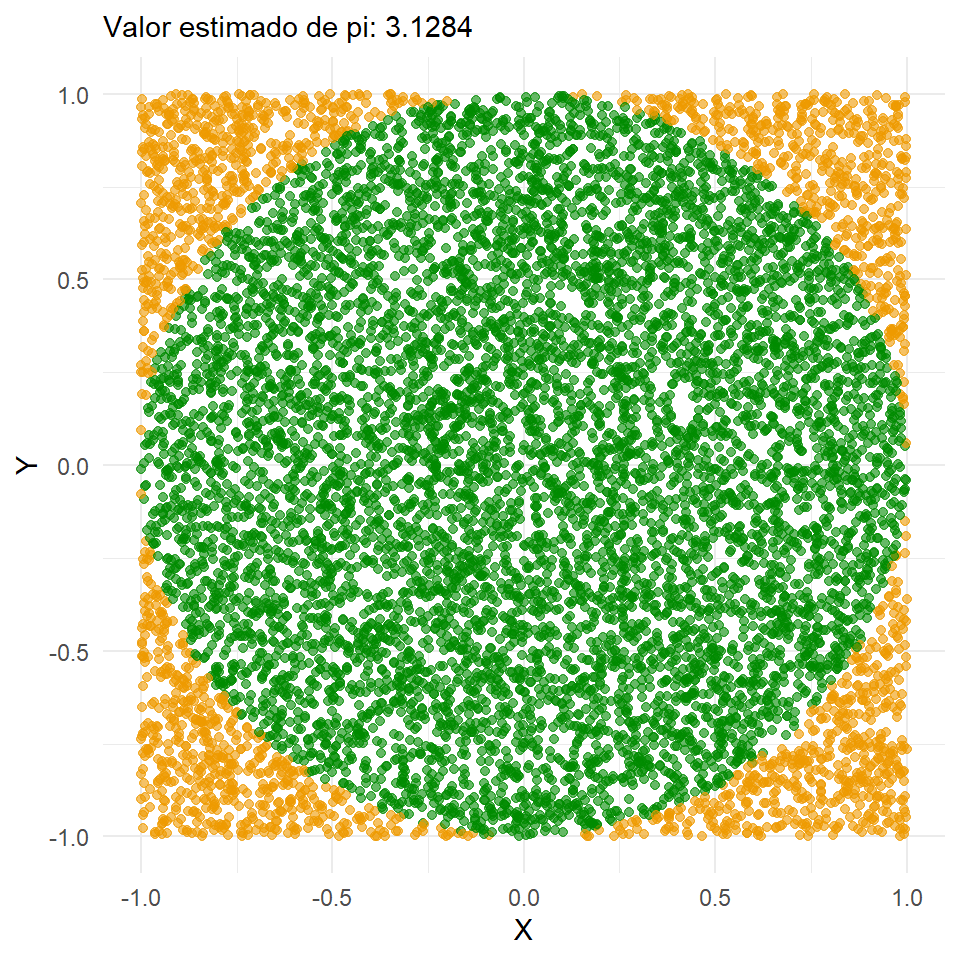El área de un círculo está dada por \(\pi \cdot r^2\), y el área del cuadrado que lo delimita corresponde a \((2r)^2 = 4r^2\). Dividiendo ambas áreas resulta
\[\frac{\mbox{área del círculo}}{\mbox{área del cuadrado}} = \frac{\pi \cdot r^2}{4\cdot r^2} = \frac{\pi}{4}\] A partir de lo cual, podemos estimar \(\pi\) usando la siguiente fórmula
\[ \pi \approx 4 \cdot \frac{\mbox{puntos simulados en el círculo}}{\mbox{puntos simulados totales}} \]
Al simular números aleatorios dentro de este cuadrado, obtenemos valores aproximados para el área del círculo y el área del cuadrado. Por lo tanto, podemos estimar \(\pi\) tomando la proporción de puntos simulados que caen dentro del círculo y el número total de puntos simulados, y multiplicar por 4.
Para identificar qué puntos caen dentro del círculo usamos la ecuación del círculo: \((x-a)^2 + (y-b)^2 = r^2\), donde \((a, b)\) es el centro del círculo. En nuestro ejemplo, el centro del círculo es \((0,0)\) y el radio es 1, así que los puntos simulados que satisfacen \(\sqrt{x^2 + y^2} \leq 1\) están dentro del círculo.
Práctica 1:
Programar una Función para la Simulación que deberá tomar dos argumentos, semilla para la reproducibilidad e iteraciones para poder escoger cuántos puntos simulados se quiere generar.
La función deberá seguir los siguientes pasos:
Establecer la semilla.
Generar el número elegido de puntos aleatorios de la distribución uniforme, los valores mínimos y máximos se establecen a los límites de nuestro dominio, aquí -1 y 1. Estos números aleatorios se almacenan en dos vectores, uno para las coordenadas \(x\) y otro para las coordenadas \(y\).
Calcula \(\sqrt{x^2 + y^2}\) para cada punto \((x, y)\) y los almacena en un vector.
Calcula cuántos puntos caen dentro del círculo evaluando \(\sqrt{x^2 + y^2} \leq 1\).
Estima \(\pi\) multiplicando 4 con la proporción de puntos dentro del círculo y el número total de puntos.
Devuelve el valor de \(\pi\) estimado.
Práctica 2: Generar una función en R que permita analizar la convergencia al valor verdadero de \(\pi\) en la medida que \(n \rightarrow \infty\).
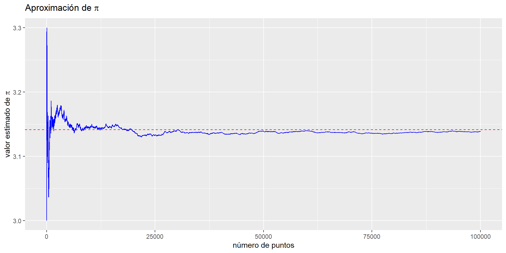
5 Ejercicios
5.1 Generadores congruenciales
Si \(x0 = 5\) y \(x_n = 3x_{n−1} \pmod{150}\), generar \(x_1, \ldots, x_{100}\). Visualizar la secuencia generada en un histograma de frecuencias y comentar los resultados.
Si \(x_0 = 3\) y \(x_n = (5x_{n−1} + 7) \pmod{200}\), generar \(x_1, \ldots, x_{1000}\). Visualizar la secuencia generada en un histograma de frecuencias y comentar los resultados.
5.2 Calidad de los RNG
5.3 Aproximación de integrales
Aproxime las siguientes integrales mediante el método de Monte Carlo y de ser posible, compare con su valor analítico.
\(\int_{0}^{1} \exp(\exp(x)) \, dx\).
\(\int_{0}^{1} (1 - x^2)^{3/2} \, dx\).
\(\int_{-2}^{2} \exp(x + x^2) \, dx\).
\(\int_{0}^{\infty} x(1 + x^2)^{-2} \, dx\).
\(\int_{-\infty}^{\infty} \exp(-x^2) \, dx\).
\(\int_{0}^{1} \int_{0}^{1} \exp(- (x^2 + y^2)) \, dy \, dx\).
\(\int_{0}^{\infty} \int_{0}^{x} \exp(- (x + y)) \, dy \, dx\).
6 Referencias
Andrews, DF, PJ Bickel, FR Hampel, PJ Huber, WH Rogers, y JW Tuckey. 1972. «Robust estimates of location, Princeton Univ». Princeton University Press, Princeton.
Atkinson, AC. 1980. «Tests of pseudo-random numbers». Journal of the Royal Statistical Society: Series C (Applied Statistics) 29 (2): 164-71.
Bhattacharjee, Kamalika, y Sukanta Das. 2022. «A search for good pseudo-random number generators: Survey and empirical studies». Computer Science Review 45: 100471.
Egger, Marlene J. 1979. «Power transformations to achieve symmetry in quantal bioassay». Tech. Report 47.
Hammersley, JM. 1955. «A Million Random Digits with 100,000 Normal Deviates». Wiley Online Library.
MacLaren, M Donald, y George Marsaglia. 1965. «Uniform random number generators». Journal of the ACM (JACM) 12 (1): 83-89.
Marsaglia, George, Stephen J Sullivan, Stephen K Park, Keith W Miller, y Paul K Stockmeyer. 1993. «Technical correspondence.» Communications of the ACM 36 (7): 105-11.
Morgan, Byron JT. 2018. Elements of simulation. Routledge.
Park, Stephen K., y Keith W. Miller. 1988. «Random number generators: good ones are hard to find». Communications of the ACM 31 (10): 1192-1201.
Pearson, Karl. 1900. «X. On the criterion that a given system of deviations from the probable in the case of a correlated system of variables is such that it can be reasonably supposed to have arisen from random sampling». The London, Edinburgh, and Dublin Philosophical Magazine and Journal of Science 50 (302): 157-75.